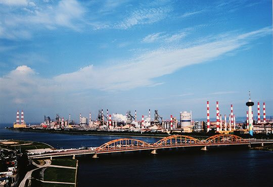

보도일 2015-06-01출처 조선일보 프리미엄조선 연재
①편에서 계속
포항제철 4기 완공을 1년여 앞두고 각하께서 졸지에 유명을 달리하셨을 때는 철강 2000만 톤 생산국의 꿈이 이렇게 끝나버리는가 절망하기도 했습니다. 그러나 저희는 철강입국의 유지를 받들어 흔들림 없이 오늘까지 일해 왔습니다. 그 결과 포항제철은 세계 3위의 거대철강기업으로 성장하였으며, 우리나라는 6대 철강대국으로 부상하였습니다.

각하를 모시고 첫 삽을 뜬 이래 지난 4반세기 동안 연인원 4000만 명이 땀 흘려 이룩한 포항제철은 이제 세계의 철강업계와 언론으로부터 최고의 경쟁력을 지닌 철강기업으로 평가받고 있습니다. 그러나 이것이 어찌 제 힘이었다고 할 수 있겠습니까? 필생의 소임을 다했다고 생각하는 이 순간, 각하에 대한 추모의 정만이 더욱 새로울 뿐입니다. ‘임자 뒤에는 내가 있어.
소신껏 밀어붙여봐’ 하신 한마디 말씀으로 저를 조국 근대화의 제단으로 불러주신 각하의 절대적인 신뢰와 격려를 생각하면서 다만 머리 숙여 감사드릴 따름입니다. 각하! 염원하시던 ‘철강 2000만 톤 생산국’의 완수를 보고 드리는 이 자리를 그토록 사랑하시던 근영 양과 지만 군이 지켜보고 있습니다.
자녀분들도 이 자리를 통해 오직 조국근대화만을 생각하시던 각하의 뜻을 다시 한 번 되새기며, 각하의 유지를 받들기 위해 더욱 성실하게 살아갈 것이라 믿습니다. 저 또한 옆에서 보살핌을 게을리 하지 않을 것을 다시 한 번 약속드립니다.
각하! 일찍이 각하께서 분부하셨고, 또 다짐 드린 대로 저는 이제 대임을 성공적으로 마쳤습니다. 그러나 이 나라가 진정한 경제의 선진화를 이룩하기에는 아직도 해야 할 일들이 산적해 있습니다. ‘하면 된다’는, 각하께서 불어넣어 주신 국민정신의 결집이 절실히 요청되는 시기입니다.
혼령이라도 계신다면, 불초 박태준이 결코 나태하거나 흔들리지 않고 25년 전의 그 마음으로 돌아가 ‘잘사는 나라’ 건설을 위해 매진할 수 있도록 굳게 붙들어 주시옵소서. 불민한 탓으로, 각하 계신 곳을 자주 찾지 못한 허물을 용서해주시기를 엎드려 바라오며, 삼가 각하의 명복을 빕니다. 부디 안면하소서!”
저 1961년 5월, 거사 명단에 박태준의 이름을 빼놓은 박정희가 만약 거사에 실패하여 형장의 이슬로 사라지게 된다면 자신의 가족을 부탁하려 했던 박태준(연재 12회). 쿠데타라 불리는 그 거사를 감행하고 십여 년쯤 지난 뒤부터는 민주화 세력과 본격적으로 갈등하고 대립하는 가운데 고달픈 나날의 기나긴 근대화를 혁명적으로 이끌었으나 용퇴 기회를 놓치고 열여덟 해 지도자의 삶을 비극으로 마친 박정희.
고인의 오래된 뜻을 고이 받들어 유택 앞에서 새삼 언약한 대로 방황하는 박지만을 경영인으로 이끌어준 박태준. 그는 ‘박정희와 박태준’의 독특한 인간관계, 완전한 신뢰의, 그 자신의 고백을 그대로 옮기자면 “절대적인 신뢰”의 인간관계를 1992년 개천절 국립묘지 한 귀퉁이에서 마침내 비장한 아름다움으로 매듭지었다.